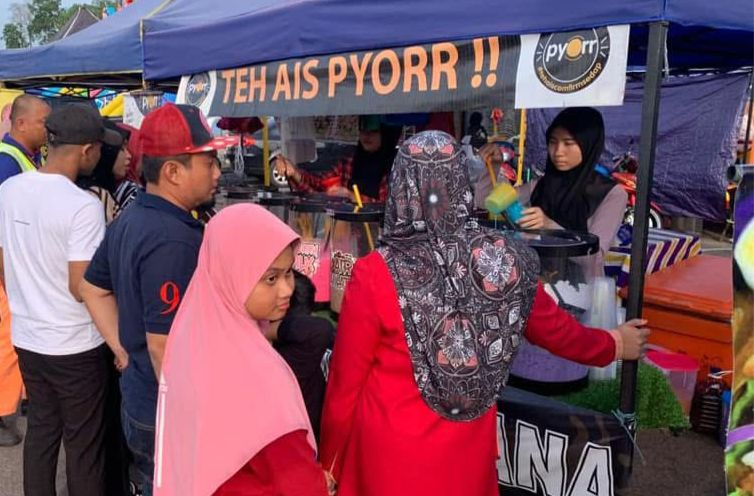
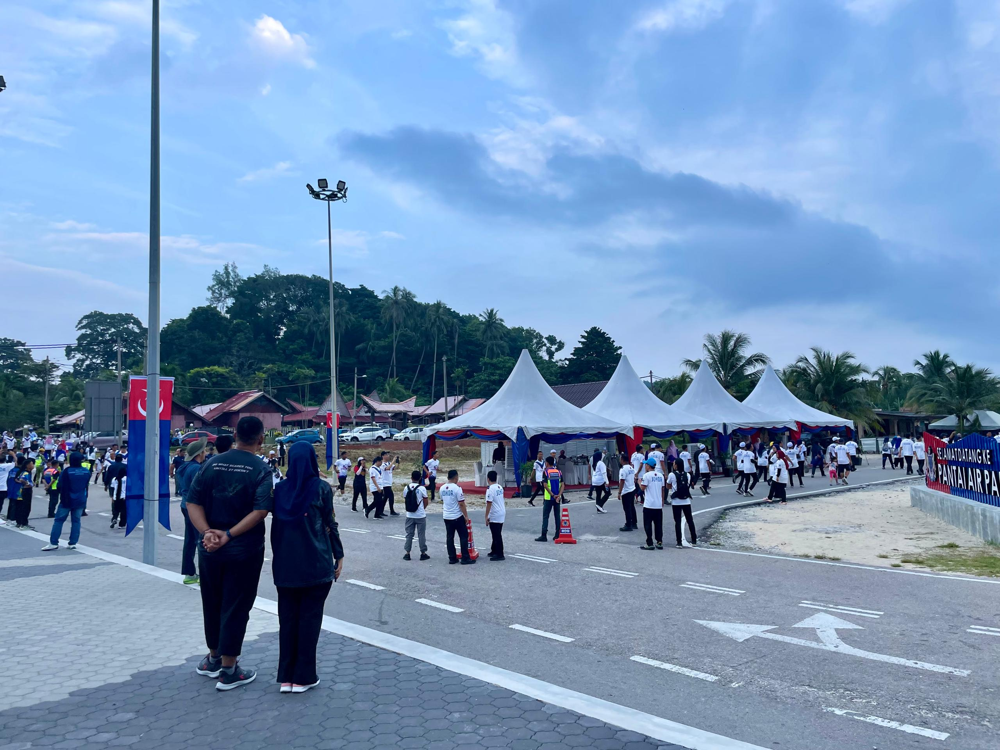

A Journey Through My Growth 🌟
Industrial Internship
🎕 Pejabat Daerah Mersing
During the previous semester break, an internship was completed at Pejabat Daerah Mersing where various administrative and organizational tasks were handled. The responsibilities included managing minute records, organising filing systems, designing boat safety posters, and creating a Merdeka banner that was used during the district-level Hari Kemerdekaan celebration. The role also involved keying in staff thumbprint attendance using Excel and ensuring that all records were updated and properly maintained throughout the internship. The experience further included assisting in meeting arrangements by preparing attendance lists, managing presentation slides, and ensuring the required names and documents were ready before each session. Although the internship period was short, it provided meaningful exposure to government office operations and offered practical knowledge in documentation, coordination, and event preparation. The experience was valuable and contributed to a stronger understanding of administrative procedures and workplace responsibilities.
Work Experience
🎕Yana Stall(Part-Time)
Assisted in the daily operations of the bakery, including customer service, order preparation, product packaging, and maintaining a clean and organised workstation. Supported staff in managing the flow of orders during peak hours, especially on busy weekends, to ensure smooth and efficient service. Also ensured that all bakery products were prepared, arranged, and displayed according to store standards to maintain quality and customer satisfaction. I only worked on weekends, providing additional support during high-demand periods.
🎕Online Sourbelt Sales (Group Project)
As part of an entrepreneurship subject, this project was a fun and hands-on experience that strengthened both teamwork and basic business skills. Collaborated with a team of five to manage sourbelt sales through WhatsApp and Telegram advertising groups. Responsibilities included packing products, coordinating COD arrangements, and handling customer inquiries. I also assisted with simple stock management to ensure sufficient supply for daily orders. This project was conducted over a period of six weeks, during which our team worked together to fulfil orders smoothly and deliver products on time.
Participation and Support in Public Events
🎕Xtif Johor Fun Run
Served as part of the event secretariat for the Xtif Johor Fun Run, supporting programme coordination, participant flow, and on-ground arrangements. Responsibilities included assisting the organizing team, guiding participants, and ensuring smooth event execution. The programme began with Subuh prayer at Pantai Air Papan, followed by a 3.5 km run at around 7 a.m. alongside the Chief Minister of Johor, leading participants along the scenic route towards Pantai Air Papan before concluding with official proceedings and the prize-giving ceremony for the top 10 finishers.
🎕National Day parade

Participated for the first time as part of the district-level National Day parade, representing Pejabat Daerah Mersing. Responsibilities included carrying the district office banner and following the parade formation to ensure smooth coordination. The rehearsal session was conducted to ensure the celebration ran seamlessly. On the main day, the parade commenced with formal opening activities, followed by a procession where I carried the banner along the parade route, witnessing performances such as poetry recitals, military skits, and cultural presentations. The event concluded with official ceremonies, making it a memorable and enriching experience.
CSR
🎕Beach Cleaning Program
Participated in a community beach cleaning initiative at Tanjung Resang, organized as part of a CSR programme by UKM. Previously, the Tanjung Resang beach area had been neglected and filled with scattered waste, making the program especially meaningful. Activities included collecting rubbish, organizing designated cleanup zones, and promoting environmental awareness. Separately, I also joined a beach cleaning activity at Pulau Hujung on another day, further contributing to maintaining a clean and sustainable coastal environment. This involvement helped restore the beauty of both locations while fostering a stronger sense of community responsibility.